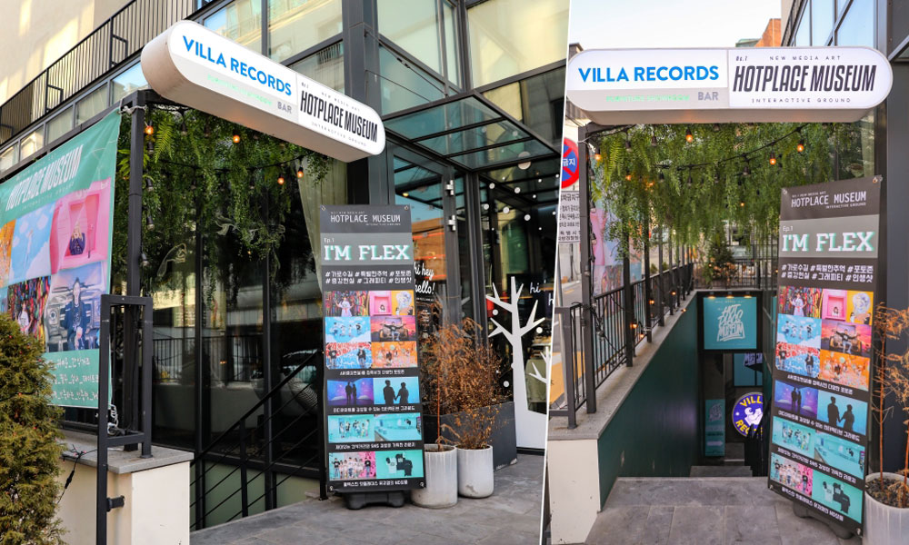

用 AR 拍出最潮打卡照，
首爾 HOTPLACE MUSEUM 韓星也來搶先體驗
_科技 x 生活美學 2020/2
_圖文 陳耀恩 Ean Chen

K-POP 近年席捲亞洲，到⾸爾玩對地⽅，也能藉由最新科技，體驗⼀⽇韓國偶像的明星光環！⼀處結合互動 AR 新科技的網美拍攝秘境，剛於 2019 年 12 ⽉正式開幕，消息傳開已有韓星主動搶先來取景拍攝！取名為「HOTPLACE MUSEUM」，並非傳統的主題博物館，但保證同樣也能⼤開眼界。座落地點本⾝就很潮，跟⽬前熱播韓劇「愛的迫降」劇中女主⾓的豪宅都位於同時是富⼈區也是最具時尚的江南區，想感受⾸爾最潮，就在這了！
HOTPLACE MUSEUM 位於江南新沙洞林蔭道，作為⾸爾時尚流⾏指標，本就常吸引各國網美前來街拍打卡。要進入⼤⾨的⿊⽩⾊系廊道，把名字與特⾊⽤英⽂字⺟印在上下左右與底牆當裝飾，很有設計感，隨著喇叭拍打的節奏，走過時讓⼈很難不跟著舞動，頓時誤以為潮到就要出道。
裡頭有三⼤主題構成，分別是塗鴉區、拍照區與多媒體互動區，類似這種提供設計佈景讓遊客拍照的室內園區在許多城市都可⾒，但主打⾼科技的⾸爾這座不⼀樣，利⽤擴增實境 AR 技術，可說創意與驚喜無限！要施展 AR 魔法，⼿機不能少，連上場地的免費 Wi-Fi 下載專屬 App 後，就可展開⼀趟奇幻旅程。最讓我印象深刻的是，當把⼿機對著⼀⾯彩霞滿天的彩繪牆，⼈靠在吉普⾞上，頓時⽩花花的鈔票湧泉般的⾶出，⼀秒變超級富豪、發⼤財啦！別顧著拍照，來到這記得在 App 中切換成錄影模式才能完全展現樂趣，⼀⾯兩⼈⾼的巨型喇叭塗鴉在⼿機螢幕上，會隨著內建⾳樂強⼒震動，這時不要傻傻站在⼀旁，來個誇張⼿勢跟著擺動，來到這，愛演，才會夠好玩！
除了 AR 展新意，這裡也有多個精⼼佈置的設計佈景，藉由配⾊與道具，⼀⾯⾯都會成為即將被熱搜的網美牆！去之前，不妨先上網看⼀下，準備合適顏⾊的衣服披掛上陣，最靚打卡照就等著⼀⼀⼿到擒來。
 ▲ 球池加上甜甜圈，相信會讓⼩朋友捨不得離開
▲ 球池加上甜甜圈，相信會讓⼩朋友捨不得離開
HOTPLACE MUSEUM
官網：http://www.hotplacemuseum.com/
臉書：https://www.facebook.com/hotplacemuseum/
地址：⾸爾江南區島⼭⼤路15街18,B1
交通⽅式：地鐵 / 3 號線新沙站 8 號出⼝步⾏約 450公尺
營業時間：10:00-21:00（20:00 截⽌入場）
⾨票：成⼈15,000韓元（約台幣 380 元）、未成年12,000韓元（約台幣 305
元）
*該⾏程預先在 KLOOK 能以 NT$ 330 訂購較划算（實際價格請以網站為準）
最近有機會造訪正夯的花蓮貨櫃屋星巴克，旁邊商場擺了好幾台頗為酷炫的遊戲機，吸引我的目光，經詢問原來是「VR虛擬實境」，這也讓我想起了感覺有些相似的 AR，立馬花了些時間在腦袋釐清兩者差異。簡單來說，「AR擴增實境」是讓你在現實中，加上許多非現實的角色或物件，常利用在拍照、攝影等互動的活動裡；「VR虛擬實境」則是讓你完全地「進入」到遊戲或是任何虛擬世界中，最有名的案例如電影「一級玩家」，就是在講「VR虛擬實境」。
藉由科技，早已超越了我們過往對於「互動」的想像，對設計工作者來說，如何與目標對象更精準而有效的溝通，一直是我們不間斷的課題。應用創新科技再加上創意，這種高沈浸的行銷體驗，或許能「玩」出意想不到的效果來！